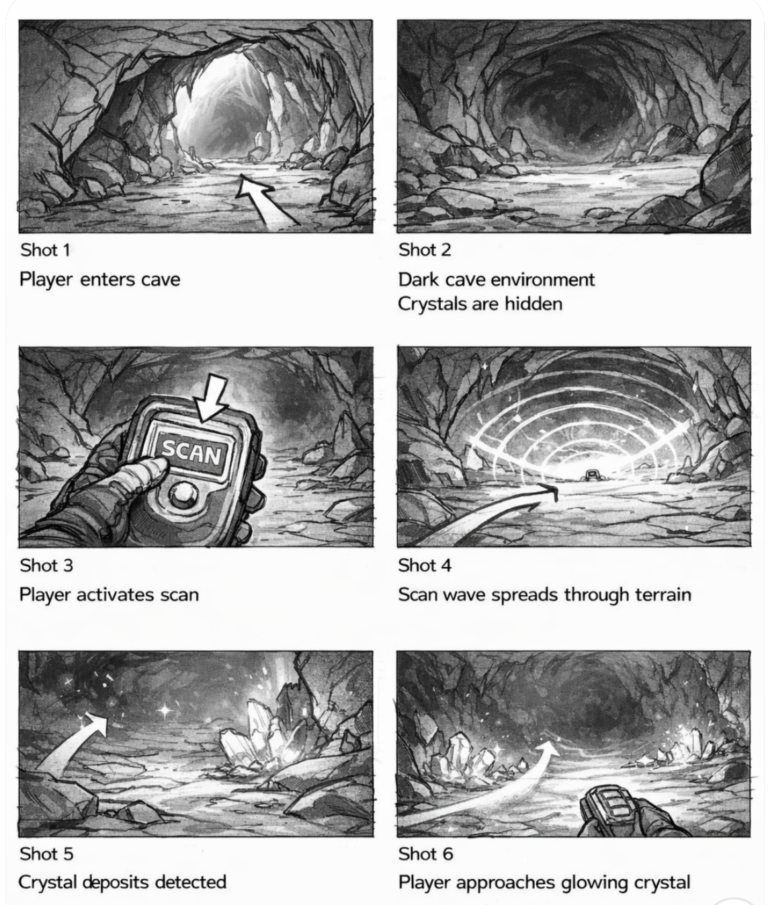

In this dream space, the player takes the role of a future miner exploring a mysterious crystal cave. Instead of immediately seeing the crystals, the player must scan the environment to detect hidden mineral formations.
When the scan is activated, the terrain briefly reveals glowing areas where crystals are located. This scanning system transforms exploration into a discovery process, encouraging players to search and uncover the hidden crystal structures within the cave.